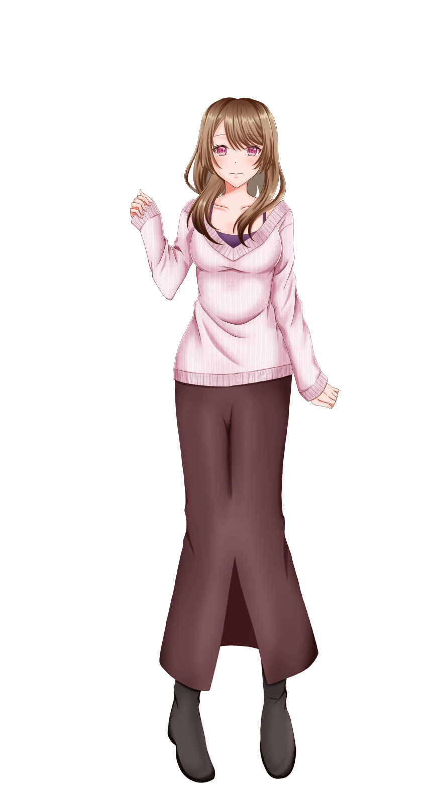
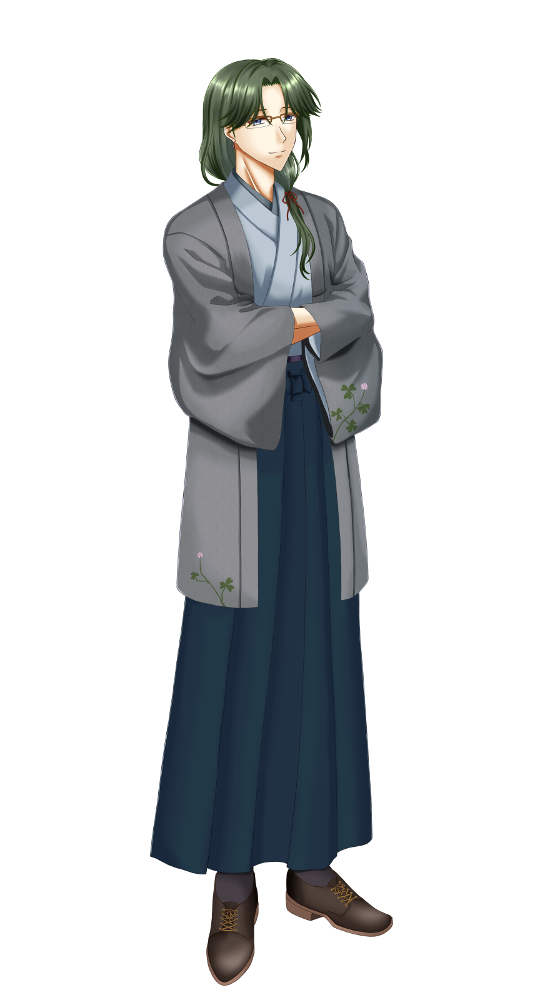
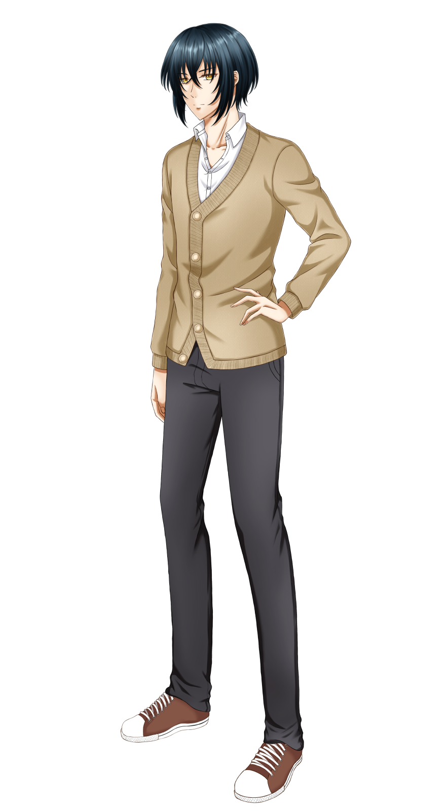
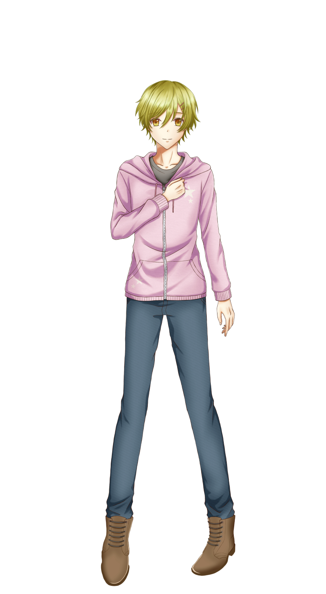
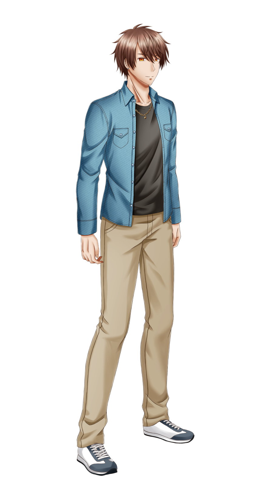
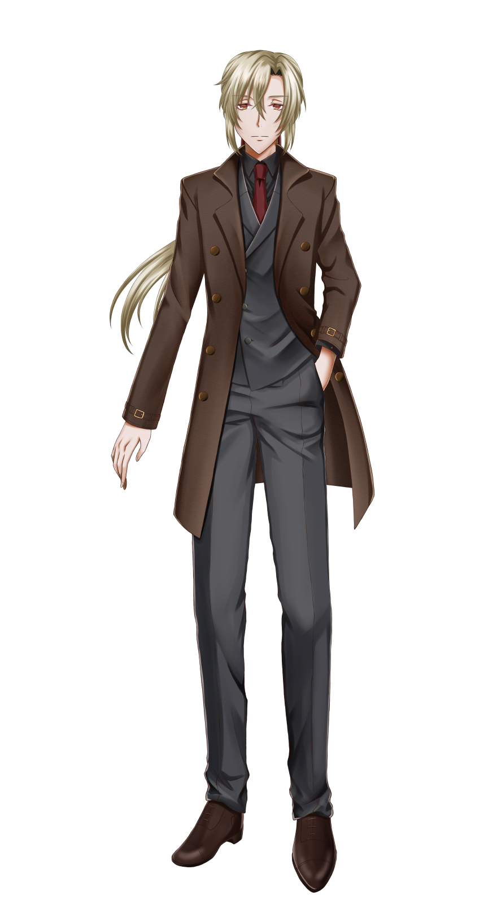

キャラクター
CHARACTER
主人公
しのみや ゆづき篠宮 結月
※名前は変更可能
- 年齢
- 20歳
- 身長
- 158cm
一人暮らしをしている大学生の女性。
大人しい性格ではあるが、嫌なことは嫌と言える芯の強さがある。

微笑みの店主
きりしま げんま霧島 弦真
CV：未定
- 年齢
- 25歳
- 誕生日
- 11月7日
- 身長
- 180cm
古書店【夢見堂】の店主。
結月の夢に出てきた人物とよく似た容姿をしている。
「きっと、貴女に必要な一冊なのでしょう。だから貴女の元に来たのですよ」

優しさを隠す先輩
みしま こうせい三嶋 光成
CV：未定
- 年齢
- 22歳
- 誕生日
- 6月11日
- 身長
- 175cm
結月の大学の先輩。
クールな性格で、いつも一人で行動している。
「あまり深入りしないほうがいい。……二度と、戻れなくなるから」

笑顔の案内人
ありすがわ しおん有栖川 詩音
CV：未定
- 年齢
- 18歳
- 誕生日
- 5月20日
- 身長
- 163cm
高校生の男の子。
結月がよく行くカフェでバイトをしている。
「いつも素敵な笑顔だなって見てました。会えて嬉しいです！」

一途な幼馴染
かみお りょうま神尾 涼馬
CV：未定
- 年齢
- 23歳
- 誕生日
- 12月2日
- 身長
- 177cm
結月の幼馴染の男性。
最近地元に戻ってきたようで、そこで結月と再会を果たす。
「……変わってないな。前より大人っぽくなったけど、根っこはそのまんま」

執着の蜘蛛
こうがみ いおり鴻上 伊織
CV：未定
- 年齢
- 28歳
- 誕生日
- 2月18日
- 身長
- 185cm
突然結月の前に現れた男性。
結月に執着するが、多くが謎に包まれている。
「……その顔で、その声で。……忘れたふりなど、するな」